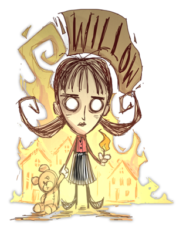

Has a sweet lighter
Lights fires when nervous
| Willow | |
|  |
|
| Nickname | The Firestarter |
| Motto | "Things are so much prettier when they burn." |
| Perk | Immune to fire damage Has a sweet lighter Lights fires when nervous |
| Sanity | 120 |
| Health | 150 |
| Hunger | 150 |
| Special Item | |
| “ | Hmmm. I wonder if these will burn. | ” |
| –Willow | ||
Willow is the first unlockable character (160 XP, see Experience for more information on how to unlock her). She is a girl suffering from the mental disease pyromania, and as such her character revolves around fire, both good and bad. Innately, she is immune to Fire damage, and when she is at low Sanity, she starts a fire at her feet. However, this fire can spread and burn resources unintentionally and cause trouble when collecting resources. She also comes equipped with Willow's Lighter, which is an infinite source of light, and can be used to light things on fire. Willow also has a lower Sanity, but this is compensated by her regaining Sanity when near a fire.
Willow's Special Power is her lighter. When you first start a game as Willow you will start with Willow's Lighter in your inventory. The lighter is basically a Torch with infinite durability and a lower light radius. It can be used to set objects on fire and provides light that can be used to survive the Night without being attacked by Charlie.
Objects that are set on fire, or things such as a Camp Fire, will increase Willow's Sanity when stood by. The larger the fire, the more Sanity is regained. Players must stand quite close to a fire to gain this buff, but as Willow is immune to fire there is no risk in doing so.
When Willow is at low Sanity levels (About 60 or less Sanity, enough for screen distortion and the ability to see passive Horrors) she will light a small fire at her feet and say "Tee Hee", "I made a fire!", "I can't help myself" or "Oops." This is unavoidable and is triggered randomly when at low Sanity. The small fire created is capable of starting forest fires and setting important player structures and objects on fire. Caution is advised when at low Sanity with Willow.
Although the fire is triggered from low Sanity, like any other fire, it is capable of raising Willow's Sanity when stood by. When the fire goes out it will leave a pile of Ash, similar to a Camp Fire.
")
")
")
.png.html "CardWillow (Foil).png (140 KB)")
")
")
| Player Characters |
| Wilson quotes ⋅ clothes • Willow quotes ⋅ clothes • Wolfgang quotes ⋅ clothes • Wendy quotes ⋅ clothes • WX-78 quotes ⋅ clothes • Wickerbottom quotes ⋅ clothes • Woodie quotes ⋅ clothes • Wes quotes ⋅ clothes • Maxwell quotes ⋅ clothes • Wigfrid quotes ⋅ clothes • Webber quotes ⋅ clothes • Unimplemented |


{kind=link}
{kind=link}
{kind=link}
{kind=link}
{kind=link}